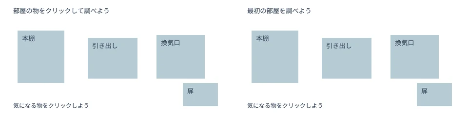
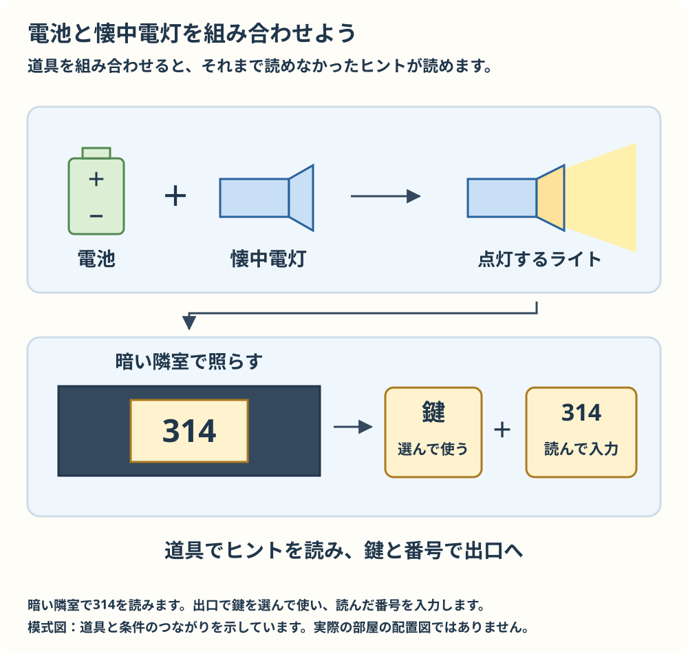

脱出ゲームの発展
基本の完成版から3つの機能を順番に追加します。
始める前に
基本編の完成版から始めます。ZIPを展開してできたフォルダーでindex.htmlを開きます。ZIPには基本編の3ファイルが入っています。
WindowsでZIPを展開する（動画）
自分で作った基本版でも同じ内容なら使えます。
各段階の変更を上から順に作業用の script.js に加えます。変更前と同じ範囲を探して、変更後のコードに置き換えてください。保存したら index.html を開くか、再読み込みします。
ステップ 1：アイテムを組み合わせる
このステップの見本を図で見る
previous !== "懐中電灯"
まだ合体しない
電池 + 懐中電灯 → 点灯ライト
材料2つを消し、点灯ライトを選ぶ
ゲーム画面とコードの前後を見る

このステップの見本
if (object.name === "本棚") this.message = "メモに 241 と書いてある";
変わったコードの一例（script.js）if (object.name === "本棚") {
見本で確かめること
2つを続けて選ぶと点灯ライトが持ち物に現れます。
目標
電池と懐中電灯を組み合わせて明かりを用意します。
小さな作業
上から順に作業します。示した目印を探し、その後のコードを追加または置き換えます。
引き出しで懐中電灯を見つける
Game の clickDrawer() で次の行を置き換えます。
置き換える範囲
this.message = "ドライバーを手に入れた";置き換えるコード
this.inventory.add("懐中電灯");
this.message = "ドライバーと懐中電灯を見つけた";番号241を合わせるとドライバーに加えて懐中電灯を持ち物に入れます。this はこのゲームの実体、inventory は持ち物を管理する実体です。
本棚で電池を見つける
Game の click() で次の行を置き換えます。
置き換える範囲
if (object.name === "本棚") this.message = "メモに 241 と書いてある";置き換えるコード
if (object.name === "本棚") {
this.inventory.add("電池");
this.message = "メモは241。電池も見つけた";
}本棚を調べると電池が持ち物に入ります。基本のドライバーと鍵も引き続き使えます。
保存して再読み込みし、本棚で電池を、番号241の引き出しで懐中電灯を取れることを確かめます。
選ぶ前の道具を覚える
同じ click() の次の行の直前に追加します。
目印
if (this.inventory.click(x, y)) {追加するコード
const previous = this.inventory.selected;previous にクリック前の選択を保存します。this.inventory.click(x, y) はクリックした道具を選びます。
材料をライトに替える
同じ click() の次の行の下に追加します。
目印
if (this.inventory.click(x, y)) {追加するコード
if ((previous === "電池" && this.inventory.selected === "懐中電灯") ||
(previous === "懐中電灯" && this.inventory.selected === "電池")) {
this.inventory.items = this.inventory.items.filter(item => item !== "電池" && item !== "懐中電灯");
this.inventory.add("点灯ライト");
this.inventory.selected = "点灯ライト";
this.message = "電池を入れ、ライトが点いた";
return;
}previous はクリック前、this.inventory.selected はクリック後の選択です。&& で二つの名前を比べ、|| で逆の順番も認めます。filter は条件に合う項目を残した新しい配列を作り、電池と懐中電灯を除きます。点灯ライトを加えて選択し、ほかの組み合わせでは持ち物を失いません。add() は同じ名前の重複を防ぎます。
保存して再読み込みし、電池と懐中電灯をどちらの順でも選んで点灯ライトに変わることを確かめます。
保存後の確認
保存してゲーム画面を更新する（動画）
index.html を再読み込みします。2つを続けて選ぶと点灯ライトが持ち物に現れます。 この段階の見本を開く
小さな練習
組み合わせたときのメッセージを変えてみます。 練習後はコードを元に戻してください。
ステップ 2：隣の部屋へ移動する
このステップの見本を図で見る
room = 2
隣の部屋を表示
room = 1
最初の部屋を表示
selected === "鍵" → state="clear"
脱出成功
ゲーム画面とコードの前後を見る
このステップの見本
for (const object of this.objects) {
変わったコードの一例（script.js）for (const object of (this.room === 1 ? this.objects : this.roomTwoObjects)) {
見本で確かめること
鍵で隣へ進み、戻る扉で戻れます。
目標
鍵を使って隣の部屋へ進み、戻れるようにします。
小さな作業
上から順に作業します。示した目印を探し、その後のコードを追加または置き換えます。
隣の部屋を用意する
Game の constructor() で最初の部屋の配列の後に追加します。
目印
new RoomObject(625, 285, 120, 80, "扉")
];追加するコード
this.room = 1;
this.roomTwoObjects = [
new RoomObject(60, 105, 160, 180, "暗い箱"),
new RoomObject(300, 130, 170, 140, "戻る扉"),
new RoomObject(625, 285, 120, 80, "出口")
];room = 1 は最初の部屋、2は隣の部屋です。roomTwoObjects に隣の箱、戻る扉、出口を別々の RoomObject として入れます。
調べる物を部屋ごとに切り替える
Game の click() で次の行を置き換えます。
置き換える範囲
for (const object of this.objects) {置き換えるコード
for (const object of (this.room === 1 ? this.objects : this.roomTwoObjects)) {条件 ? A : B は条件が真なら A、そうでなければ B を選びます。今いる部屋の物を調べます。
隣の部屋へ移動する
click() の扉の条件を、次の範囲ごと置き換えます。
置き換える範囲
} else if (object.name === "扉") {
if (this.inventory.selected === "鍵") {
this.state = "clear";
this.message = "脱出成功！ R でもう一度";
} else this.message = "扉には鍵が必要だ";
}置き換えるコード
} else if (object.name === "扉") {
if (this.inventory.selected === "鍵") {
this.room = 2;
this.message = "隣の部屋に入った";
} else this.message = "扉には鍵が必要だ";
}鍵を選んで扉を調べると、クリアではなく隣の部屋へ移ります。この後に戻る扉と出口の処理を追加します。
戻る扉と暗い箱を調べる
同じ click() で、扉の条件の後に追加します。
置き換える範囲
} else this.message = "扉には鍵が必要だ";
}
return;置き換えるコード
} else this.message = "扉には鍵が必要だ";
} else if (object.name === "戻る扉") {
this.room = 1;
this.message = "最初の部屋に戻った";
} else if (object.name === "暗い箱") {
this.message = "暗くて中が見えない";
}
return;戻る扉なら部屋を1に戻し、暗い箱なら中が見えないことを伝えます。
出口から脱出する
暗い箱の条件の後に出口の処理を追加します。
置き換える範囲
this.message = "暗くて中が見えない";
}
return;置き換えるコード
this.message = "暗くて中が見えない";
} else if (object.name === "出口") {
if (this.inventory.selected === "鍵") {
this.state = "clear";
this.message = "脱出成功！ R でもう一度";
} else this.message = "出口には鍵が必要だ";
}
return;鍵を選んで出口を調べるとクリアです。
今いる部屋を描く
Game の draw() で次の2行を置き換えます。
置き換える範囲
ctx.fillText("部屋の物をクリックして調べよう", 45, 45);
for (const object of this.objects) {置き換えるコード
ctx.fillText(this.room === 1 ? "最初の部屋を調べよう" : "隣の部屋を調べよう", 45, 45);
for (const object of (this.room === 1 ? this.objects : this.roomTwoObjects)) {部屋番号に合わせて説明と描く物を選びます。
保存して再読み込みし、鍵を選んで扉から隣の部屋に移動します。戻る扉と出口の動きも確かめます。
保存後の確認
鍵で隣へ進み、戻る扉で戻れます。隣の出口に鍵を使うとクリアです。 この段階の見本を開く
小さな練習
隣の箱の位置を変えて調べます。 練習後はコードを元に戻してください。
ステップ 3：暗い箱と出口の番号
このステップの見本を図で見る
hintRead=false && "314"==="314" → false
点灯ライトで暗い箱を調べる必要がある
true && "313"==="314" → false
番号が違う
true && "314"==="314" → true
出口が開いて脱出
ゲーム画面とコードの前後を見る
このステップの見本
for (let i = 0; i < this.digits.length; i++) {
変わったコードの一例（script.js）for (let i = 0; i < shownDigits.length; i++) {
見本で確かめること
電池と懐中電灯で箱を照らし、鍵と314で出口を開けます。
目標
明かりで番号を見つけ、鍵と番号を使って脱出します。
小さな作業
上から順に作業します。示した目印を探し、その後のコードを追加または置き換えます。
出口の番号と手がかりを記録する
Game の constructor() の次の行の下に追加します。
目印
this.digits = [0, 0, 0];追加するコード
this.exitDigits = [0, 0, 0];
this.hintRead = false;出口の3けたを別の配列に持ち、箱の手がかりを読んだかを hintRead に記録します。
出口画面の処理を用意する
Game の click() の前に追加します。
目印
click(x, y) {
if (this.state !== "playing") return;追加するコード
clickExit(x, y) {
if (x >= 30 && x < 150 && y >= 390 && y < 435) {
this.view = "room";
return;
}
}出口画面の戻る欄を押すと、部屋の画面に戻ります。
出口の数字を進める
clickExit() の戻る処理の後に追加します。
置き換える範囲
clickExit(x, y) {
if (x >= 30 && x < 150 && y >= 390 && y < 435) {
this.view = "room";
return;
}
}置き換えるコード
clickExit(x, y) {
if (x >= 30 && x < 150 && y >= 390 && y < 435) {
this.view = "room";
return;
}
for (let i = 0; i < this.exitDigits.length; i++) {
const left = 250 + i * 90;
if (x >= left && x < left + 70 && y >= 190 && y < 270) {
this.exitDigits[i] = (this.exitDigits[i] + 1) % 10;
return;
}
}
}欄の左端は250から90ずつずれ、幅70です。クリック位置が欄に入ると数字に1を足し、10で割った余りにします。9の次は0です。
手がかりと番号を確かめる
clickExit() の数字の処理の後に追加します。
置き換える範囲
this.exitDigits[i] = (this.exitDigits[i] + 1) % 10;
return;
}
}
}置き換えるコード
this.exitDigits[i] = (this.exitDigits[i] + 1) % 10;
return;
}
}
if (x >= 300 && x < 500 && y >= 300 && y < 345) {
if (this.hintRead && this.exitDigits.join("") === "314") {
this.state = "clear";
this.message = "脱出成功！ R でもう一度";
} else this.message = "明かりで手がかりを確かめよう";
}
}hintRead が真で、3つの数字をつないだ文字列が "314" と同じ場合だけクリアです。&& は両方の条件が必要という意味です。番号を知っていても、箱の手がかりを読んでいなければクリアできません。
出口画面のクリックを振り分ける
Game の click() で次の行の下に追加します。
目印
if (this.state !== "playing") return;追加するコード
if (this.view === "exit") {
this.clickExit(x, y);
return;
}view が "exit" の間は clickExit() が数字や戻るボタンを調べます。return で部屋の物を続けて調べるのを防ぎます。
点灯ライトで箱の手がかりを読む
click() の暗い箱の条件で次の行を置き換えます。
置き換える範囲
this.message = "暗くて中が見えない";置き換えるコード
if (this.inventory.selected === "点灯ライト") {
this.hintRead = true;
this.message = "明かりで番号314が見えた";
} else this.message = "暗くて中が見えない";点灯ライトを選んで箱を調べると番号314を表示し、読んだことを記録します。

電池と懐中電灯を組み合わせると、点灯するライトになります。そのライトで暗い隣室を照らすと、番号314を読めます。出口で鍵を選んで使い、読んだ番号314を入力すると開けられます。
部屋の配置ではなく、道具と条件のつながりを示しています。基本のドライバーから鍵を得る流れは省略し、電池と懐中電灯の組み合わせに注目しています。
出口の番号画面を開く
click() の出口の条件で次の2行を置き換えます。
置き換える範囲
this.state = "clear";
this.message = "脱出成功！ R でもう一度";置き換えるコード
this.view = "exit";
this.message = "出口の番号を合わせよう";鍵を使うと、すぐにクリアせず出口の番号画面を開きます。
出口の数字を表示する
Game の draw() の引き出し画面を描く次の範囲を置き換えます。
置き換える範囲
if (this.view === "drawer") {
ctx.fillText("数字をクリックして番号を合わせよう", 165, 120);
for (let i = 0; i < this.digits.length; i++) {置き換えるコード
if (this.view === "drawer" || this.view === "exit") {
const shownDigits = this.view === "drawer" ? this.digits : this.exitDigits;
ctx.fillText("数字をクリックして番号を合わせよう", 165, 120);
for (let i = 0; i < shownDigits.length; i++) {引き出しか出口なら番号画面を描き、shownDigits に今の画面に対応する配列を選びます。
選んだ配列の数字を描く
番号欄の描画で次の行を置き換えます。
置き換える範囲
ctx.fillText(String(this.digits[i]), 275 + i * 90, 240);置き換えるコード
ctx.fillText(String(shownDigits[i]), 275 + i * 90, 240);引き出しと出口それぞれの数字を同じ描画処理で表示します。
保存して再読み込みし、電池と懐中電灯で点灯ライトを作ります。箱の手がかりを読んで鍵を使い、出口で314を合わせて脱出できることを確かめます。
保存後の確認
電池と懐中電灯で箱を照らし、鍵と314で出口を開けます。 この段階の見本を開く
小さな練習
出口の番号と箱のメッセージを両方変えて試します。 練習後はコードを元に戻してください。